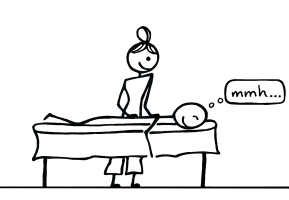
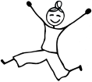
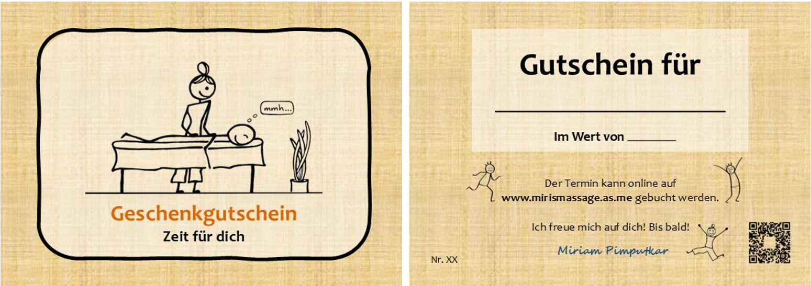

Miri's Massage
& Polarity in Winterthur
Herzlich Willkommen! Schön, dass du hier bist!
Bist du körperlich angespannt? Schränkt dich dein Körper im Alltag ein? Hast du Muskelschmerzen? Oder möchtest du dich einfach mal genüsslich entspannen und dir so etwas Gutes tun? Dann bist du bei mir genau richtig.
Termin buchen →1
vorher
3Warum Massage?
Mit der Massage wird durch manuellen Druck und Zug auf deine Muskeln die Durchblutung gefördert. Dein Stoffwechsel wird angeregt. Deine Muskeln entspannen sich und schmerzhafte Verhärtungen lösen sich auf.
Die Massage reduziert Stress im gesamten Organismus. So können nicht nur körperliche Beschwerden wie z.B. Kopfschmerzen, sondern auch psychische Leiden wie Depressionen und Angstzustände gelindert werden. Ein ganzheitliches Wohlbefinden entsteht.
Mein Angebot
Als Dipl. Klassische Masseurin und Polaritytherapeutin in Ausbildung biete ich dir folgendes an:
Ganzheitliche Massage
Massage für Körper und Seele, individuell auf dich abgestimmt.60 minKlassische Ölmassage
Löst Verspannungen und schmerzhafte Verhärtungen, fördert die Durchblutung.30 / 60 minPolaritybehandlung
Ganzheitliche Körperarbeit nach der Polarity-Methode.60–90 minLomi Lomi
Ganzkörper-Wellnessmassage nach der hawaiianischen Massagemethode Lomi Lomi.90 min
Ergänzend
- Myofasziale Triggerpunktbehandlung+
- Schröpfmassage (mit Schröpfgläsern)+
- Reflexologie (z.B. Füsse, Hände, Ohren)+
Was meine Arbeit ausmacht
Achtsam.
Aufgrund meiner Feinfühligkeit arbeite ich sehr achtsam mit meinen Händen. So erhältst du eine individuell auf dich abgestimmte Massage.Wohltuend.
Während der Massage arbeite ich in der Stille oder zu sanfter Musik, voll und ganz auf dich fokussiert. Durch das Nichtsprechen nimmst du deinen Körper und die wohltuenden Berührungen intensiver wahr.7Ganzheitlich.
Du profitierst von meinen reichhaltigen Erfahrungen und Wissen aus der Physio- und Ergotherapie, TCM und Kinesiologie. Bei Interesse zeige ich dir Übungen, die dir im Alltag helfen, selber Stress, Anspannung und Schmerzen zu reduzieren.Sozial.
Falls du nicht- oder wenigverdienend bist, bin ich gerne bereit, dir finanziell entgegenzukommen. Melde dich ungeniert per E-Mail bei mir. mirismassage@gmail.com8
Das bin ich
Das bin ich: ein fröhliches, bewegungsfreudiges Wesen mit einer grossen Faszination für den menschlichen Körper. Ich liebe es, mit meinen Händen zu arbeiten und mit Menschen in Kontakt zu sein.
Gesund und körperlich frei zu sein, ist keine Selbstverständlichkeit. So praktiziere ich regelmässig eine Mischung aus Pilates, Yoga, Faszientraining, Qi Gong, Meditation und vieles mehr. Was meinem Körper und meiner Seele nicht fehlen darf, ist das Tanzen zu den 5 Rhythmen.
Neugierig geworden? Dann melde dich jetzt für eine Kennenlernmassage an!
10Erfahrungsberichte
«Miriam hat mir eine wohltuende Massageerfahrung geschenkt und dabei nicht nur meine Verspannungen erfolgreich gelöst, sondern auch meiner Psyche etwas Gutes getan. Ich kann einen Besuch in der Praxis auf’s Wärmste empfehlen.»Tamara R.
«Miriam ist eine wundervolle Masseurin! Sie schöpft aus einer breiten Palette an Techniken, gepaart mit viel anatomischem und medizinischem Wissen. Das hat mir sehr geholfen.»Raphael E.11
«Ich habe mich bei Miriam gleich wohl gefühlt. Sie gestaltet eine Atmosphäre, in der man sich entspannen kann und einen neuen Zugang zum eigenen Körper findet. Miriam hat eine grosse Begabung.»Peter A.

Geschenkgutschein – Zeit für dich

als Faltkarte per Post (A6) · digital zum Verschicken · digital zum selber Ausdrucken (A6/A5)
Schreib mir gerne per E-Mail, welche Version du möchtest. mirismassage@gmail.com

die Praxis, 4. Stock
14Kontakt
Massage & Polarity
Miriam Pimputkar
Münzgasse 2
4. Stock, Lift vorhanden
8400 Winterthur
Zahlung: Bar, TWINT oder Banküberweisung
mirismassage@gmail.com
 15
15Bis bald!
Ich freue mich auf dich! Bis bald!
Körperbasierte Empfehlungen in Winterthur: Alexander-Technik bei Peter, Bewegungs-Workshops bei Steffen, 5Rhythmen bei Monika, Musiktherapie bei Nicole, Bewegte Meditation bei Jacqueline.
Termin buchen →16